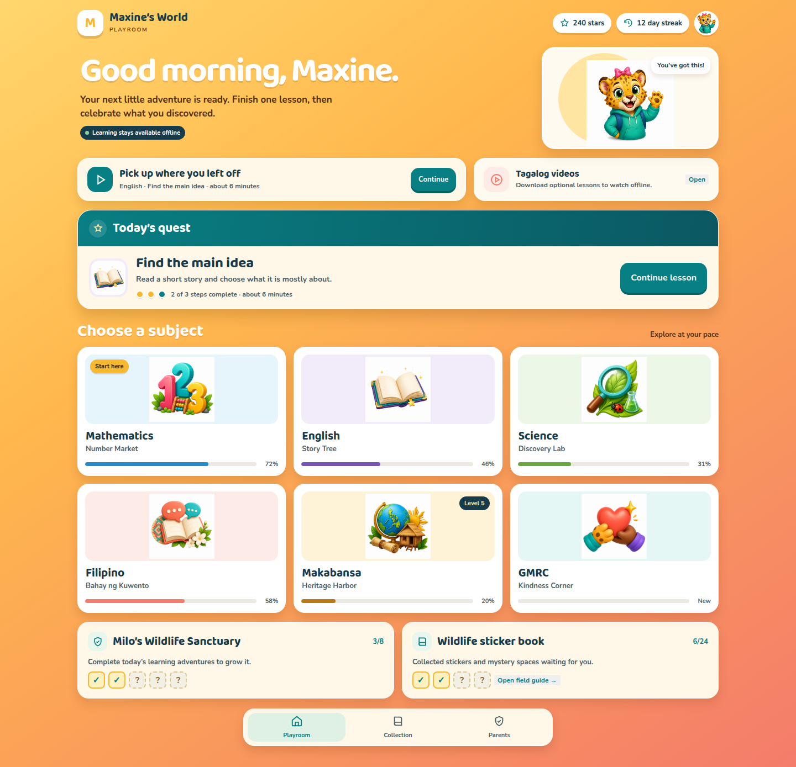
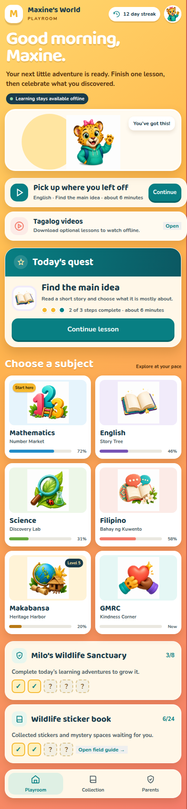

Make the Playroom better, not different.
The active direction keeps Maxine’s World’s current visual identity and improves the real Playroom flow. It does not introduce a new navigation metaphor.
Current look preservedPlayroom flow alignedVillage/map concept dropped
Recommended refinement
Greeting → resume learning → videos → quest → subjects → sanctuary and stickers → navigation

What stays familiar
- Gold-to-coral Playroom background
- Cream surfaces and teal primary actions
- Baloo 2 and Nunito typography
- Existing mascot, subject, sanctuary, and sticker artwork
- Rounded tactile controls and parent boundary
What gets better
- Resume learning and Today’s Quest become the clearest actions.
- Optional Tagalog videos get a compact, honest entry point.
- Subject cards scan with less copy and clearer progress.
- Sanctuary and stickers remain rewards, not navigation.
- Mobile stacking preserves the same priority and keeps navigation out of the content.
Mobile layout
Same Playroom, same hierarchy, no content overlay.
